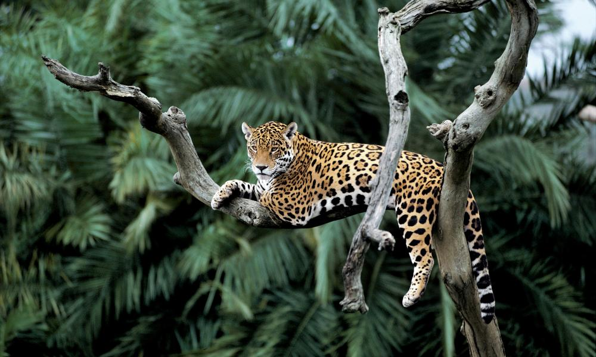
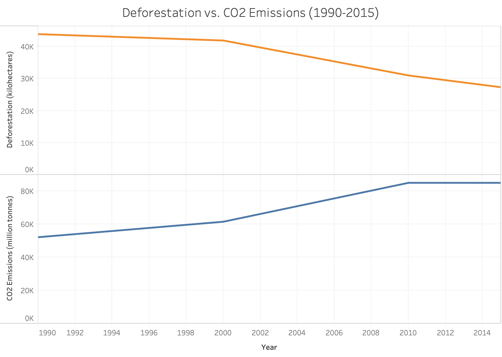
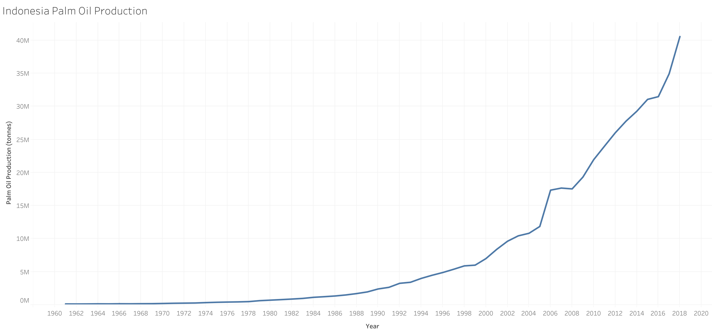
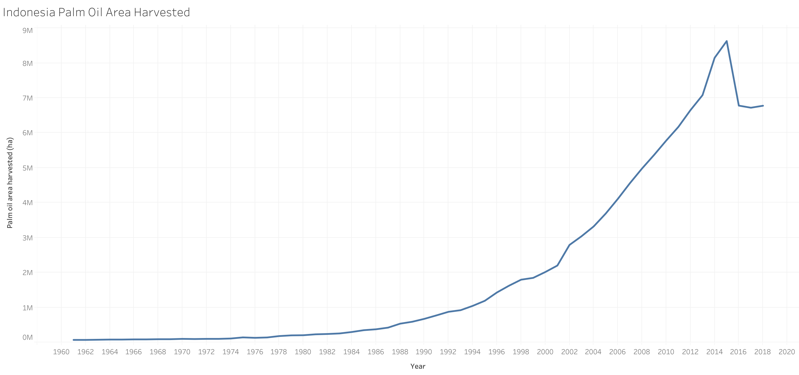
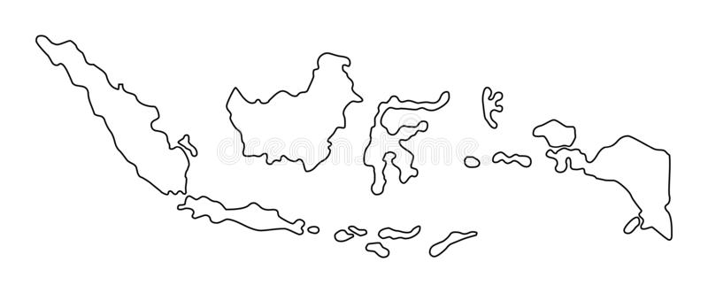

10,000 years ago
There were 6 billion hectares of forest,
covering 57% of the habitable land on Earth.
Let’s put this into perspective…
1 billion hectares is equivalent to the size of the U.S.
There were 6 billion hectares of forest,
covering 57% of the habitable land on Earth.
Let’s put this into perspective…
1 billion hectares is equivalent to the size of the U.S.
5.1 billion hectares of forest remained,
covering 48% of habitable land.
Today, the forest covers 38% of habitable land—a loss of over 1 billion hectares in a century.
This leaves us with 4 billion hectares.
With the rapid industrialization and development of agricultural technology of the past century and a half, countries have increasingly converted their forests for agricultural land use and urbanization. The tens of thousands of wildfires that occur every year also contribute to almost one-quarter of global forest loss, resulting in the loss of biodiversity and increased CO2 emissions.
However, not all forest loss is equal. While wildfires result in massive forest loss, the victim forests will eventually regrow over many years. In contrast, completely removing primary rainforest to produce crops or build towns will permanently change its ecosystem—these trees will not regrow. The latter is what we call deforestation.
95% of deforestation occurs in the tropics, and beef, soil, and palm oil production are responsible for 60% of this damage. It is no surprise that palm oil and soy account for 18% of this due to their many uses—from use in food products to feed for livestock and biofuels.
And as for beef, 2.1 million hectares every year are set aside for pasture land to raise cattle—that’s about half the size of the Netherlands!
Urbanization, on the other hand, accounts for only 0.6% of deforestation. Simply put, the products and food we choose to buy have a greater impact on global land use than expanding cities.
(graphics here and afterwards are not final and will be remade and refined in D3)
Another major cause of forest loss is wildfires, both natural and deliberately started for maintenance or site preparation purposes. While forests burned in wildfires are destroyed, this damage is temporary and they will ultimately regrow if the land is not converted and left alone.
However, despite this lower relative impact on long term forests, wildfires cause massive disruption to natural habitats and have resulted in the loss of biodiversity. Some species that have been impacted by wildfires and forest loss in general include _____.
Every second that passes, we lose more and more of our forests. As you read this sentence, a football field of forest was just lost. With deforestation also comes other consequences, including the loss of the many plants and animals that live in our forests and increased greenhouse gas emissions that contribute to global warming.
The Amazon Rainforest is one of the most diverse ecosystems in the world, home to a third of the world’s species. The continued destruction of an ecosystem such as the Amazon will have disastrous consequences worldwide. The Amazon regulates our ecosystem, the plants are essential to modern medicine, and it plays a key role in the Earth’s oxygen and carbon cycles. The rate of species extinction is accelerating and we will lose our biodiversity if we continue down this path of destruction. These negative effects are not limited to just the Amazon, the deforestation of forests everywhere will continue to cause irreversible harm to our planet unless we make a change.

Beyond just producing oxygen, forests also act as carbon sinks and lowering the CO2 in the atmosphere. When deforestation occurs, there is both CO2 produced by the process, as well as carbon released back into the atmosphere by the trees that are cut down. Increased CO2 emissions are just another example of the negative effects of deforestation, as well as a major issue in climate change and global warming.
Scroll to see how our forests have changed across the world.
(users will be able to hover over countries to see their individual stats, as well as click on a few select countries. when one of those countries is selected, the next slide and future slides after it will update with narrative info related to that particular country. there will also be additional exploratory buttons on this page to alter what data is shown. Also the map will be centered and take up the majority of the screen but flexbox is being annoying.)
Insights into deforestation in Indonesia will go here. This page (and similar pages after it) will update with information related to the country selected on the previous page.


